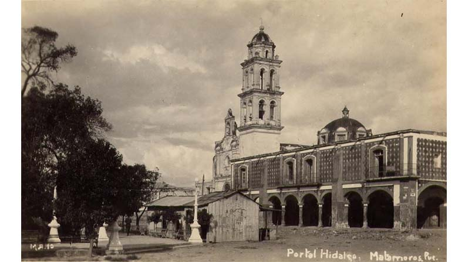

El antiguo Itzocan, hoy Izúcar, fue un importante asentamiento que a la llegada de los españoles se encontraba bajo el dominio de los aztecas; el mismo Hernán Cortes destaca dos cosas de Izúcar: sus muchos templos y su sistema de canales, que todavía subsiste. Como principal ciudad de la región e importante nodo comercial, no es de sorprenderse que los dominicos eligieran Itzocan para fundar su convento y de allí trabajar en la evangelización de los indígenas.
La mención más antigua de un dominico en Izúcar data de 1533, se llamaba Francisco de Mayorga y fue el primer evangelizador de los izucarenses; en 1541 el convento ya aparece enlistado en los documentos de la orden dominica siendo su primer vicario fray Luis Rengifo. En 1550 el virrey concede un repartimiento de indígenas para construir el edificio que actualmente vemos y cuya iglesia se concluyó hasta 1612 como reza la inscripción de la fachada del templo.
Fue en 1755 cuando los frailes dominicos dejan convento y la parroquia de naturales al clero de la diócesis poblana. En 1811 la iglesia alberga a los líderes insurgentes Morelos y Matamoros quienes invitan a los izucarenses luchar por la independencia. El 11 de abril de 1862 una de las capillas posas del atrio es testigo del fusilamiento del general Miguel Cástulo de Alatriste, destacado liberal. Carmen Serdán, heroína revolucionaria y nieta de Alatriste estaría en la iglesia en 1933 para develar una placa.
El 8 de agosto los izucarenses celebran al fundador de la orden de Predicadores, Santo Domingo de Guzmán; originalmente la celebración era el 4 de agosto aunque en realidad el santo murió un 6 de agosto del año 1221. Domingo nació en Caleruega (provincia de Burgos), España en 1170, siendo sus padres Félix de Guzmán y Juana de Aza; estudió en Palencia, fue canónigo de la Catedral de Osma y en al año 1215 funda una primera casa que sería el preludio a la orden religiosa que sería aprobada un año después por el papa Honorio III, la Orden de Predicadores, comúnmente conocidos como dominicos. Gran predicador y hombre sumamente piadoso Domingo consolidó su orden y tras una breve enfermedad moriría en Bolonia, Italia, donde en la actualidad descansan sus restos.
Junto con la fiestas de Santiago y la de la Asunción, la de Santo Domingo es de las festividades religiosas más importantes de Izúcar; desde días previos al 8 de agosto se celebra el novenario y se coloca la vendimia en la calle Benito Juárez; no puede faltar la presencia de los voladores de Papantla, quienes a manera de manda desde ya varios años realizan su ritual en el atrio del templo. El día 7 de agosto por la tarde repique de campanas y cuetes anuncian la llegada de las imágenes de los 14 barrios y pueblos vecinos.
El día 8 al medio día se realiza la misa de fiesta, con la participación del Arzobispo poblano o de algún otro prelado y se ha vuelto también tradicional la participación de los sacerdotes que son oriundos de nuestra ciudad. Sin duda el momento más emotivo es la procesión por la tarde, en la cual participan las imágenes se adornan con flores, frutas, panes, como una manera de ofrecer lo mejor de sí a Dios por la intercesión de Santo Domingo, cuya imagen es porteada por los voladores de Papantla.